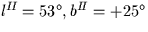

Next: SLA_RVLSRK - RV Corrn to Kinematical LSR
Up: SUBPROGRAM SPECIFICATIONS
Previous: SLA_RVLG - RV Corrn to Local Group
- ACTION:
- Velocity component in a given direction due to the Sun's
motion with respect to the ``dynamical'' Local Standard of Rest.
- CALL:
- R = sla_RVLSRD (R2000, D2000)
- GIVEN:
-
| R2000,D2000 |
R |
J2000.0 mean ![$[\,\alpha,\delta\,]$](img3.gif) (radians) (radians) |
|---|
- RETURNED:
-
| sla_RVLSRD |
R |
Component of peculiar solar motion
in direction R2000,D2000 (km s-1) |
|---|
- NOTES:
- 1.
- Sign convention: the result is positive when
the Sun is receding from the given point on the sky.
- 2.
- The Local Standard of Rest used here is the dynamical LSR,
a point in the vicinity of the Sun which is in a circular
orbit around the Galactic centre. The Sun's motion with
respect to the dynamical LSR is called the peculiar solar
motion.
- 3.
- There is another type of LSR, called a kinematical LSR. A
kinematical LSR is the mean standard of rest of specified star
catalogues or stellar populations, and several slightly
different kinematical LSRs are in use. The Sun's motion with
respect to an agreed kinematical LSR is known as the
standard solar motion.
The dynamical LSR is seldom used by observational astronomers,
who conventionally use a kinematical LSR such as the one implemented
in the routine sla_RVLSRK.
- 4.
- The peculiar solar motion is from Delhaye (1965), in Stars
and Stellar Systems, vol 5, p73: in Galactic Cartesian
coordinates (+9,+12,+7) km s-1.
This corresponds to about 16.6 km s-1
towards Galactic coordinates .
Next: SLA_RVLSRK - RV Corrn to Kinematical LSR
Up: SUBPROGRAM SPECIFICATIONS
Previous: SLA_RVLG - RV Corrn to Local Group
SLALIB --- Positional Astronomy Library
Starlink User Note 67
P. T. Wallace
12 October 1999
E-mail:ptw@star.rl.ac.uk